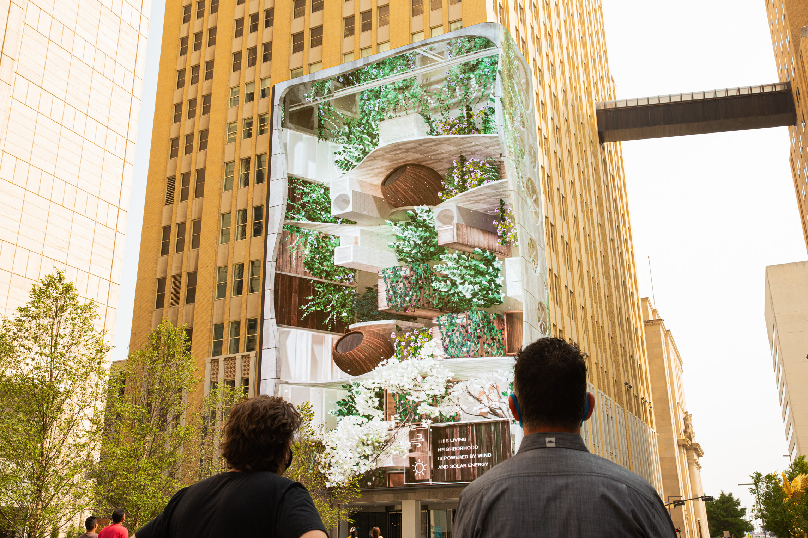
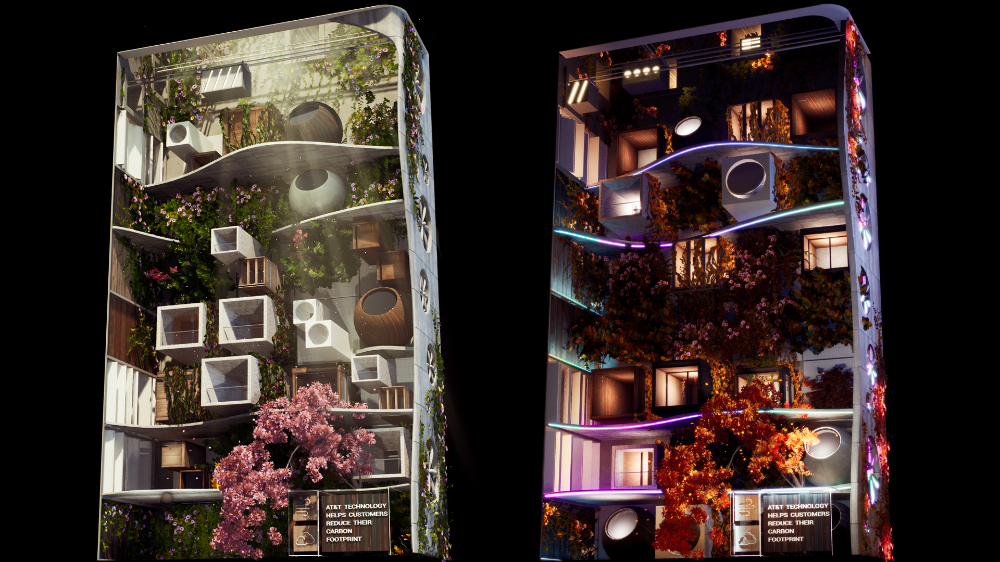
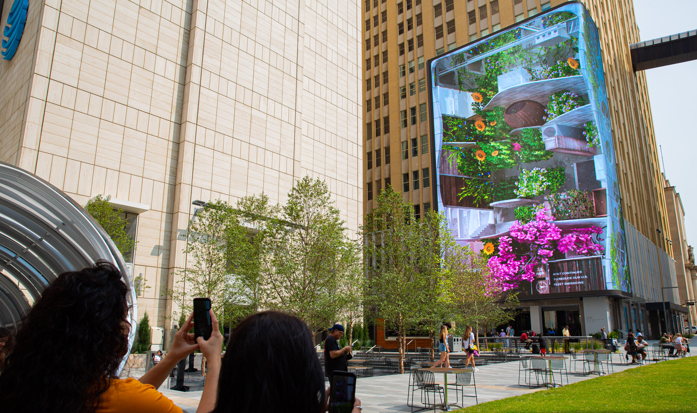

AT&T Plazza
AT&T partners with Moment Factory to reimagine the AT&T Discovery District as a living, immersive multimedia destination
Behind the scenes, a custom-made digital management system created a robust control platform for the 104-foot tall, 6K media wall and an LED-powered trellis. This innovative technology platform features a content management systems (CMS) and show controls that connect and synchronize the media installations.
I created the Neighborhood capsule which consists of a scene generatively populated with blocks and vegetation. The evolution of the capsule as well as some events are directly linked to the Dallas weather in real time. I also contributed to the optimization of various other capsules using Unreal Engine
Take a look at the project overview on YouTube
  